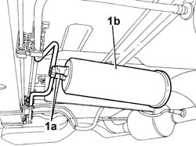

1080E20 ACTIVE CARBON FILTER FOR FUEL VAPOURS - R + R
- Path
- Procedures > 10 ENGINE > 1080 EXHAUST EMISSION CONTROL SYSTEM > 1080E EVAPORATION CONTROL SYSTEM > 1080E20 ACTIVE CARBON FILTER FOR FUEL VAPOURS - R + R
- Kind
- repair procedure (removal / refitting; the operation number is the code)
- Applies to
- engines: 2.0 16v; all production periods
- Interactive page
- https://sloeber94.github.io/elrnDB-fUlss/en/#/179007117
Applies to: engines: 2.0 16v; all production periods
 Removing
Removing
 Refitting
Refitting- Position the vehicle on the lift.
- Raise the vehicle.
1. Disconnect the rapid connectors (1a) from the active charcoal filter and remove the fuel vapour active charcoal filter (1b).

Applies to: engines: 2.0 16v; all production periods
Refitting
Removing- Fit the fuel vapour active charcoal filter on the support.
- Connect the rapid connectors for the evaporation control pipes to the active charcoal filter.